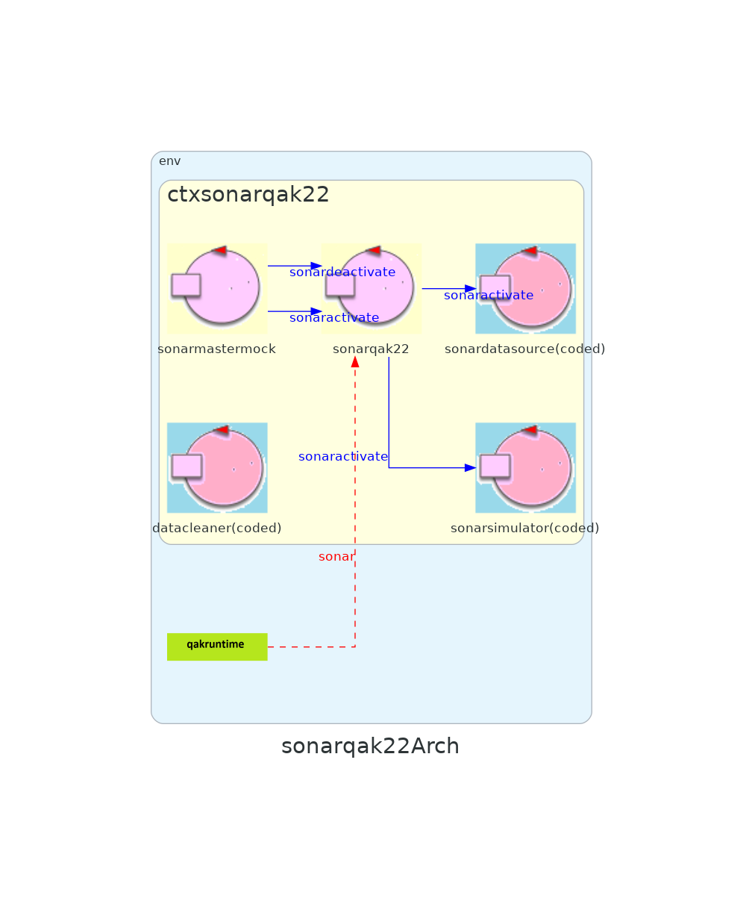
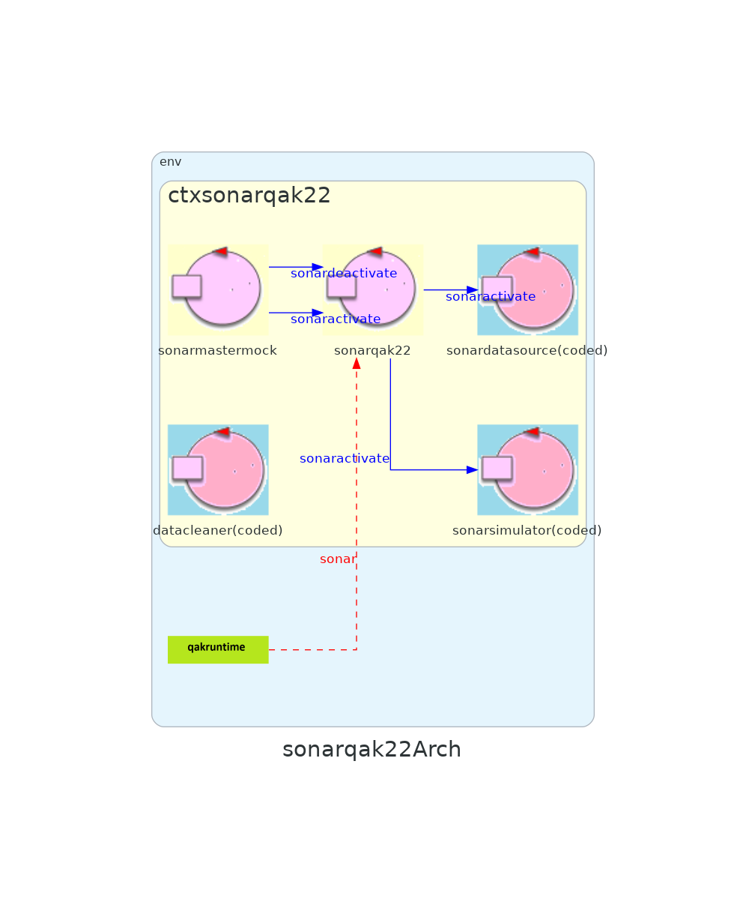

Introduction
Tema finale corso di studio Ingegneria dei sistemi software, Laurea Magistrale Università di Bologna
Precedenti
CHECKPOINT SPRINT 2
Modello del Progetto

per facilità di lettura, ledTrigger è disegnato come un dispaccio, ma nel progetto è un evento: il sistema deve mantenersi funzionante anche se il led non è presente
zooming sui componenti Led e Sonar
 

Requirement analysis
The WasteService must create a WasteServiceStatusGUI that shows to the Service-manager
- visibilità: la gui è dedicata al Service-manager?, altri utenti hanno possibilità di accedere a queste informazioni?
the current state of the transport trolley and it position in the room
- state-precision(trolley) : cosa si intende per stato del trolley? Esecuzione, Stopped e Home (Idle)?
- position-precision : fino che precisione arriva la posizione? Devo comunicare esattamente le cordinate? Devo comunciare il "luogo" (Home,Plastic,Glass,Indoor)?
the current state of the Led
- state-precision(led) : cosa si intende per stato del led? la funzione che sta eseguendo in questo momento(on, off, blink)?
the current weigth of the material stored in the two waste-containers
- weight : l'utente deve conoscere il peso attuale, non la capacità rimanente
Modello dei requisiti
Problem analysis
visibilità
Se la GUI di per sè espone contenuti sensibili, della quale solamente il Service-manager può avere accesso, allora è necessario aggiungere strumenti di autenticazione ed identificazione di Service-manager rispetto agli altri utenti.
In caso contrario, ovvero che viene richiesto che la GUI possa essere vista anche dal Service-manager, il Service-manager non subisce nessuna distinzione rispetto ad altri utenti che arrivano alla GUI
state-precision(trolley)
Ragionando sull'utilità dei possibili domini di precisione, rispetto al titolo dell'utente citato nei requisiti, l'analista pensa che siano necessari informazioni di alto livello quali il trolley funzioni (RUNNING), sia a riposo ( HOME) oppure è temporaneamente fuori servizio (STOP)
position-precision
stesso ragionamento di state-precision(trolley), all'utente target l'analista pensa che gli interessi solo ad alto livello dove è situato il trolley, e non la coordinata esatta all'interno dello spazio
state-precision(led)
stesso ragionamento di state-precision(trolley), led on, off e blink
polling vs push
Un punto non citato dai requisiti ma di spontanea riflessione, la GUI da progettare è un componente passivo, ovvero che non deve modificare nessun dato e deve inviare dati alle altre parti del sistema attorno progettato negli sprint scorsi, quindi la GUI deve solo ricevere gli aggiornamenti inviati da altre parti del sistema, senza richiederli (tranne informazioni di keep-alive).

{kind=link}
{kind=link}
{kind=link}